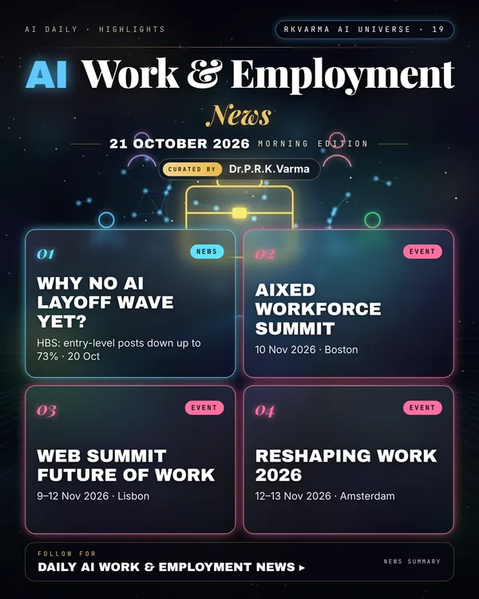

Latest updates · 21 October 2026
In the full issue →Why has AI not caused mass layoffs yet? A Harvard Business School analysis weighs the warning signs against reassuring labour-market data.
Research, industry & policy
- AI hasn't spurred widespread layoffs yet. Why not?, HBS Working Knowledge · 20 Oct 2026: The analysis notes that entry-level job postings have fallen by up to 73% in four years by some counts, while unemployment has stayed low, buoyed largely by growth in healthcare.
Conferences, workshops & events
- AIxEd Workforce Summit, 10 Nov 2026 · Boston: AI, education and the workforce.
- Web Summit Future of Work Summit, 9–12 Nov 2026 · Lisbon: Track within Web Summit 2026.
- Reshaping Work 2026, 12–13 Nov 2026 · Amsterdam (VU Amsterdam): Conference on the platform economy and AI at work.
Why it matters
The gap between AI headlines and labour data is where policy and training choices still have time to matter.

